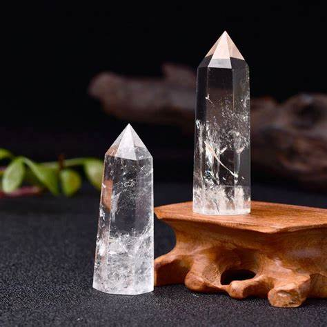
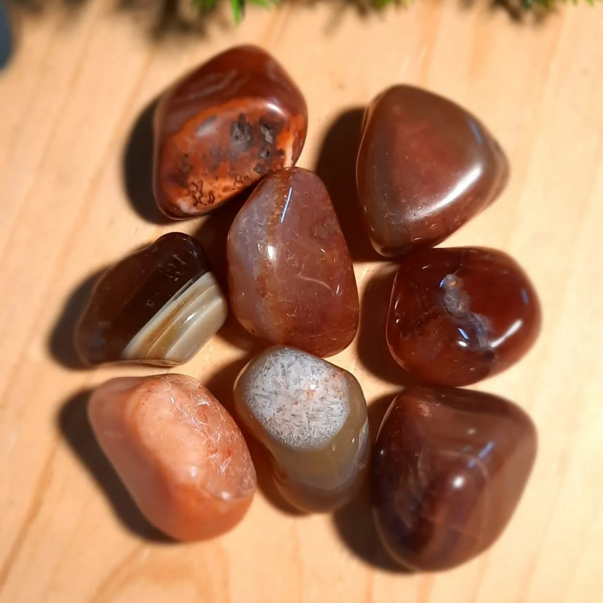
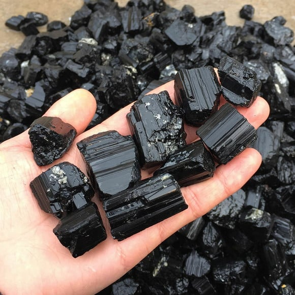
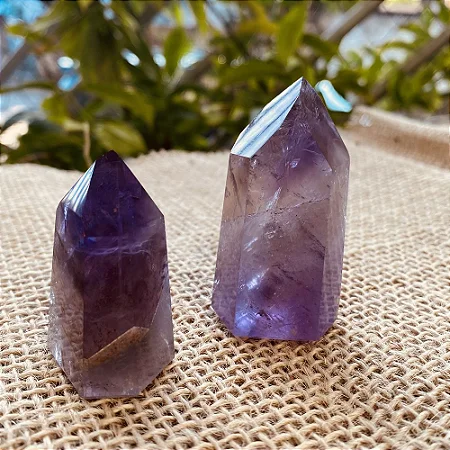

Quartzo Cristal
O Quartzo Cristal é a mais poderosa pedra de cura por ser o maior amplificador energético do nosso planeta. Pedra que alinha e harmoniza todos os Chakras, principalmente os superiores, representa a luz que guia, reforçando a conexão espiritual. Sua energia é receptora, abundante e renovadora, amplificador da luz interior, da criatividade, da inteligência, abrindo caminhos e ajudando na materialização das coisas.

Ágata
As Ágatas são pedras que promovem o ancoramento das energias e proporcionam equilíbrio emocional, físico e intelectual. Elas ajudam a centrar e estabilizar a energia física. A Ágata tem o poder de harmonizar Yin e Yang, as forças positiva e negativa que mantêm o equilíbrio do universo. Por ser uma pedra calmante e suavizante, ela tem uma ação gradativa, mas de grande força. As suas múltiplas camadas podem trazer à luz informações ocultas. Ela promove a aceitação do próprio eu, estimulando a confiança em nós mesmos.
A pedra estabiliza a aura, eliminando e transformando energias negativas. O seu efeito purificador é poderoso tanto no nível físico quanto no emocional. Colocada sobre o coração, ela cura indisposições emocionais que impedem a aceitação do amor. Sobre o abdômen ou ingerida em forma de elixir, a Ágata estimula o processo digestivo e alivia a gastrite. Essa pedra também cura os olhos, o estômago e o útero; limpa o sistema linfático e o pâncreas; fortalece os vasos sanguíneos e cura problemas de pele.

Turmalina Negra
A turmalina negra é conhecida pela sua energia curativa, capacidade de atrair prosperidade e de aumentar a nossa energia vital. A turmalina rosa é um cristal que atua no campo amoroso, mas também está fortemente ligada à cura emocional, libertação e alegria.

Ametista
A Ametista é uma pedra extremamente poderosa e protetora, com uma vibração altamente espiritual. Conhecida como pedra do próximo passo, transforma energias negativas, como estresse, tristezas e mágoas, em energias positivas. Ela é muito benéfica para mente, acalmando-a ou estimulando-a de acordo com a necessidade.
Ativa o sistema linfático e a circulação sanguínea; combate vícios; alivia enxaquecas e a tensão. A Ametista trata a insônia e promove um sono reparador. Ela harmoniza e conecta os corpos físico, mental e emocional, ligando-os ao espiritual.

 GAIA
GAIA